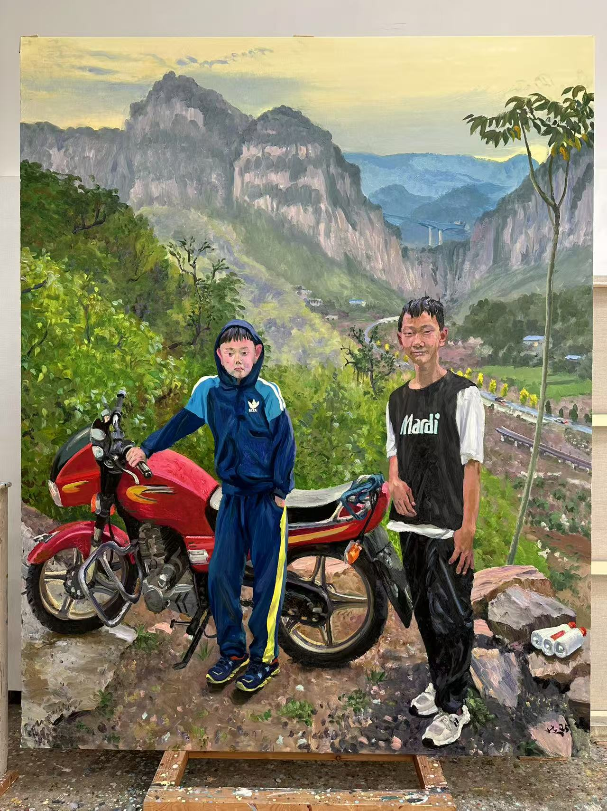
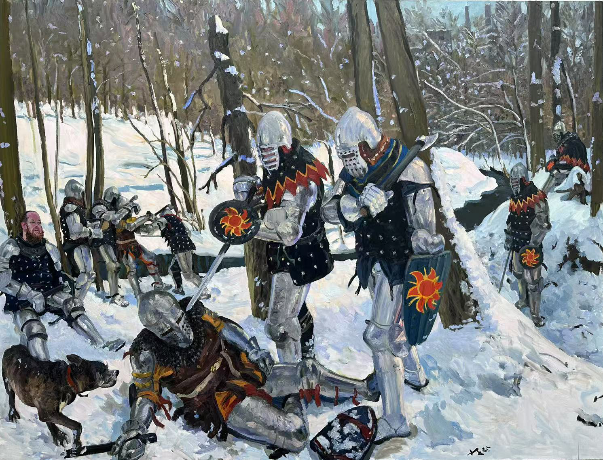

图片暂未载入，打开来源页查看
他把画架带到真实的地点：工地、河岸、震后城市、故乡街巷与远方人群。 画面中的人物并非戏剧角色，而是在时代现场中短暂停留的普通人。
这里以项目与主题组织刘小东的代表性创作线索，作品图片来自公开画廊资源页面。 你已获得艺术家授权后，可继续替换为更高清的正式图档。
刘小东的绘画常从现场开始，地点不是背景，而是人物命运与时代变化发生的位置。
日记、照片、影像和访谈让作品成为一个项目，而不只是一张完成的画。
他的现实主义不追求宏大叙事的口号感，而是把注意力放回具体的人、天气、等待与疲惫。


从学院训练到大型现场项目，刘小东持续把绘画推向真实世界， 也让现实主义在当代语境中保持开放的生命力。
东北工业城镇的成长经验，成为他后来反复回望的现实底色，也让“故乡”“青年”和普通人的身体经验持续进入画面。
早期学院训练让他建立起扎实的造型能力，也让写生、人物和现实观察成为长期方法。
学院体系中的油画训练，为其人物造型、空间组织与现场写生能力奠定基础。
这一时期的作品把朋友、家人、青年和私人空间纳入画面，现实主义不再只服务宏大叙事，而转向具体的人。
三峡工程带来的迁徙、建设和地貌变化进入绘画，作品把社会事件转化为人物、地点和观看关系。
长卷式画面容纳多个身体、地点与时间片段，现实被组织成可阅读的连续现场。
三峡、震后地区、城市边缘与跨地域现场进入创作视野，绘画与影像、日记、采访和展览档案彼此补充。
从故乡到边地，从中国现场到海外街区，刘小东持续把画架带到真实环境中，让项目成为绘画之外的叙事结构。
《老妈》等作品将家庭记忆、个人关系和时代背景并置，画面在亲近与距离之间保持张力。
泰康美术馆展览系统梳理其从学院训练、现实主义探索到大型现场项目的创作脉络。
作品在绘画、影像、日记和展览空间之间形成互文，也让现实主义在当代语境中持续更新。